Saga do Herói: as 17 classes
Cada classe tem a sua: uma linha de missões que conta a história do herói dela e termina num mascote para o Códice e num título de +100 de HP. Esta é a tabela das dezessete lado a lado — e depois, uma página por classe com as missões em ordem.
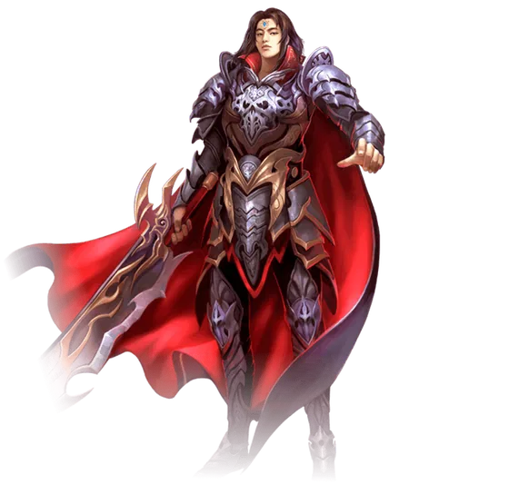
Guerreiro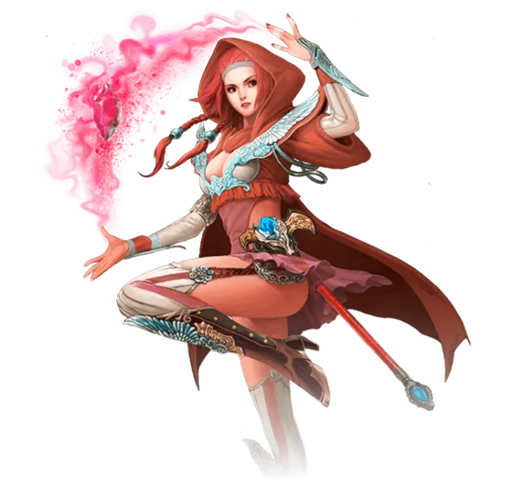
Mago Feiticeira
Feiticeira
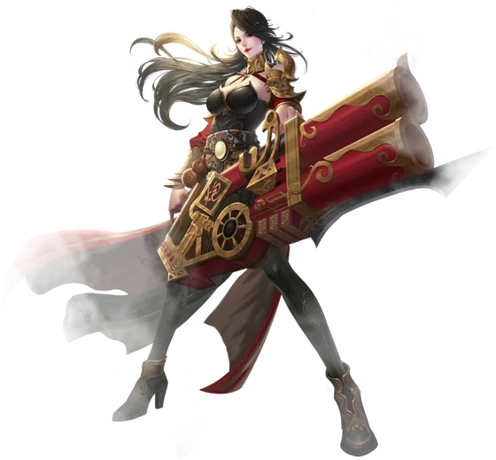
Atiradora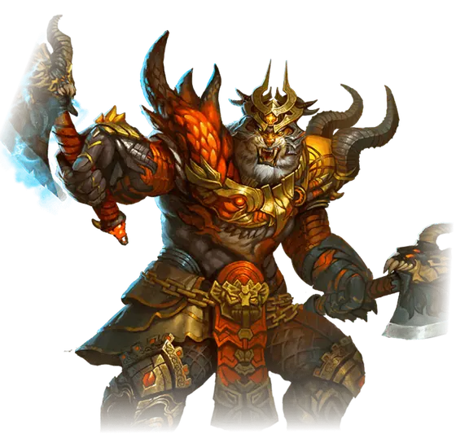
Bárbaro Sacerdote
Sacerdote
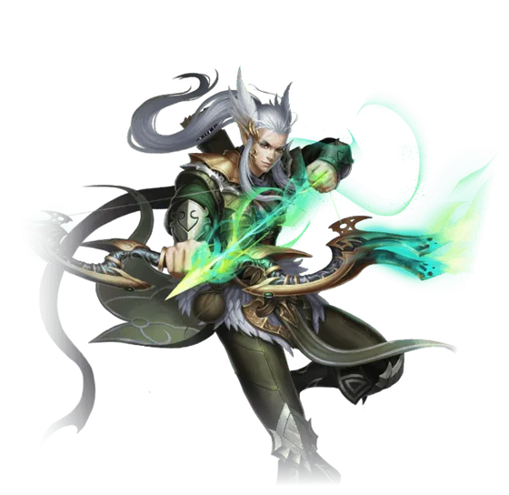
Arqueiro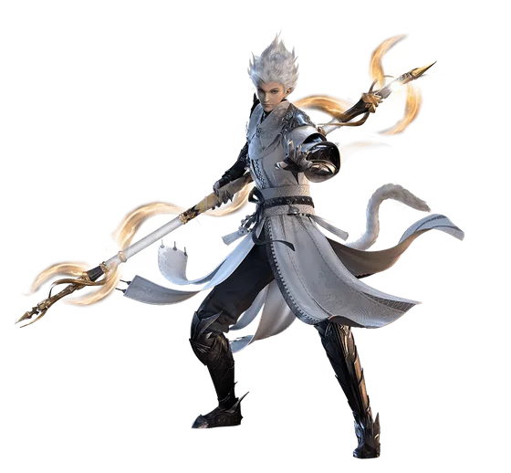
Andarilho Mercenário
Mercenário
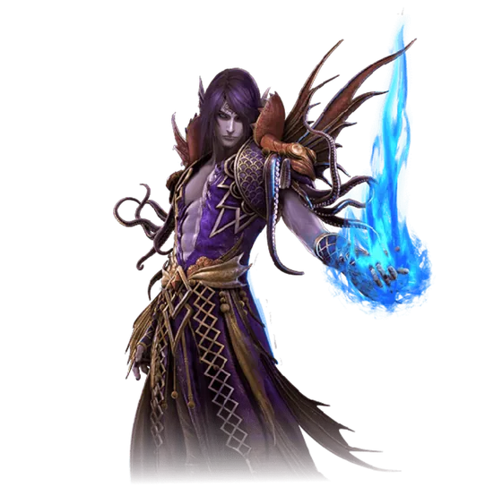
Espiritualista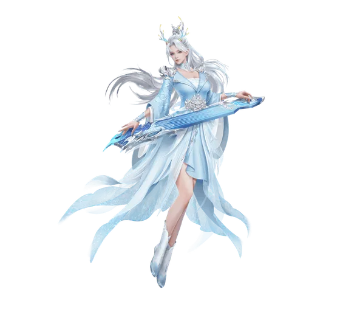
Bardo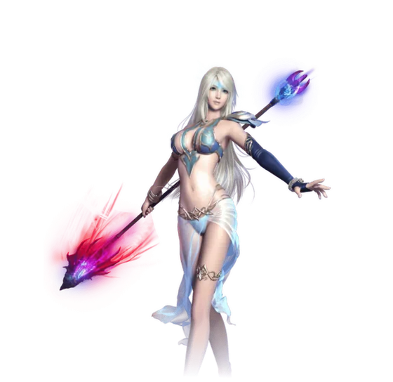
Místico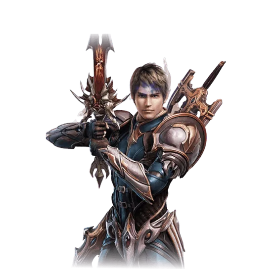
Arcano Paladino
Paladino
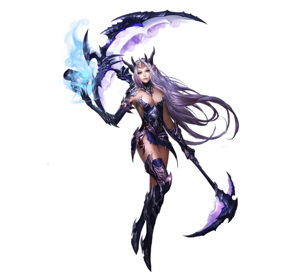
Tormentador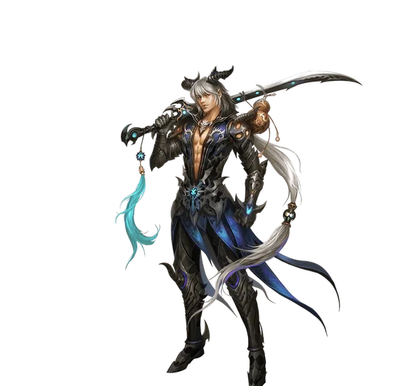
Retalhador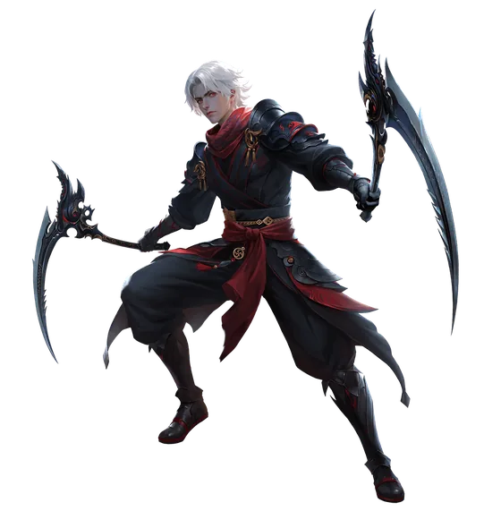
CeifadorAs regras, que valem para todas
- Abre com nível 80 de pico histórico e cultivo Mahayana. Pico histórico: se você já passou do 80 alguma vez, conta.
- Fica em Missões, na quarta aba — Saga do Herói. Os heróis aparecem em retratos, três por vez, e as setas dos lados trocam de raça.
- Espere o nível 100. A experiência das missões cresce com o seu nível e trava no 100. Fazer no 80 entrega o mesmo mascote e bem menos experiência.
- A recompensa sai do baú, no canto inferior direito do retrato do herói. Uma vez por personagem.
- Você não precisa ser da classe para fazer a saga dela. O que muda é só qual retrato você abre.
As dezessete
| Classe | Herói | Mascote | Título | Missões |
|---|---|---|---|---|
| Guerreiro | General Chung | Mini Chung | Época Passada | 40 |
| Mago | Tensa | Mini Tensa | Uma História Memorável | 48 |
| Feiticeira | Yeona | Mini Yeona | Um Grão no Universo | 27 |
| Atiradora | Atiya, a Sorridente | Mini Atiya | Tempo Aproveitado | 29 |
| Bárbaro | Viensa | Mini Viensa | Façanhas de Um Herói | 33 |
| Sacerdote | Yuusa | Ovo de Jadezinho Sonoro | Destinado à Lua | 35 |
| Arqueiro | Yi Yunyang | Ovo de mini Yunyang | Sopra o Vento da Paz | 41 |
| Andarilho | Syvos | Ovo de Syvos Pequeno | Flor de Pessegueiro Primaveril | 25 |
| Mercenário | Dongfang Lie | Ovo de Pequeno Dongfang Lie | Dança da Lua e Maré | 40 |
| Espiritualista | Dongfang Meng | Ovo de Pequena Dongfang Meng | Grou e Humano Unidos | 36 |
| Bardo | Dongfang Liqing | Ovo de Pequena Liqing | Lua ao Som Magnífico | 48 |
| Místico | Yuan Ruo | Ovo de Pequeno Yuan Ruo | Fragrância da Memória | 41 |
| Arcano | Mu Suiliang | Ovo de Pequeno Mu Suiliang | Espada do Renascimento | 41 |
| Paladino | Tian Yi | Ovo de Mini Tian Yi | Os verdadeiros heróis! | 52 |
| Tormentador | Ye Hansu | Ovo de Pequena Hansu | Rigidez com ternura | 29 |
| Retalhador | Feng Jie’ao | Ovo de Pequeno Feng Jie’ao | Andarilho solitário | 41 |
| Ceifador | Tianshou | Ovo de Mascote Tianshou Pequeno | Outono do Mundo | 39 |
Três coisas que a janela não diz
Espere o nível 100. A experiência de cada missão cresce com o seu nível e para de crescer no 100. A saga abre no 80 e o mascote é o mesmo, mas quem faz no 80 troca milhões de experiência por pressa. É o único conselho aqui que nenhuma das fontes em português dá — está na PWpedia.
A ordem entre as sagas não importa, e você não precisa ser da classe. O retrato do Guerreiro abre para qualquer um. O que amarra é o nível e o cultivo, não a classe do personagem.
O mascote é cosmético. Ele não luta, não some com o tempo e só aparece depois de entrar no Códice. O que vale em atributo é o título: +100 de HP, e eles acumulam — dezessete sagas são +1700 de HP.
Duas linhas que ainda não estão conferidas
O Paladino tem uma fonte só. As duas páginas em português dizem a mesma coisa e trazem o mesmo aviso — o texto saiu do servidor de testes da Level Up durante a expansão, e nomes podem ter mudado desde então. A PWpedia não tem o Paladino. Então trate essa linha como provável, não como medida.
O Ceifador diverge entre as fontes. Em português o ovo é o do Tianshou Pequeno e o título é Outono do Mundo; em inglês a PWpedia registra Tevin Pet Egg e Undefeated. Não são traduções uma da outra. Ficamos com a versão em português, que é a do nosso cliente — mas a divergência fica escrita aqui em vez de escondida.
Se você fez alguma delas e viu diferente, conte no Discord. Uma correção de quem jogou vale mais do que três sites concordando.
Levantado a partir da Wiki PW, do Trivia PW e da PWpedia, que é a fonte em inglês e a única com todas numa página só.